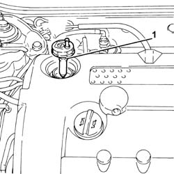
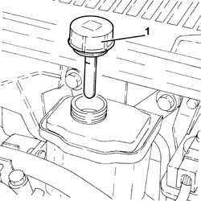
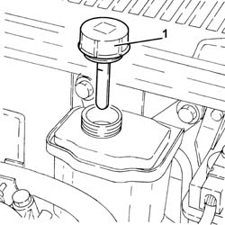

0010T71 power steering fluid check level and top up if necessary
- Path
- Procedures > 00 MAINTENANCE > 0010 NEW UNITS AND PLANNED MAINTENANCE'. > 0010T vehicle oil and fluids > 0010T71 power steering fluid check level and top up if necessary
- Kind
- repair procedure (removal / refitting; the operation number is the code)
- Applies to
- engines: 2.0 JTS, 3.2 V6, 1.9 JTD 16v, 2.0 JTS, 2.4 JTD 20v; all production periods
- Interactive page
- https://sloeber94.github.io/elrnDB-a156/en/#/3237418
Applies to: engines: 3.2 V6; all production periods
Check that the power steering fluid level corresponds to the MAX reference on the reservoir.
If the oil level is lower than MAX, top up with the specified fluid.
 | Type | Component | Name | Qty. |
|---|---|---|---|---|
- | Fluid [l] | HYDRAULIC POWER ASSISTED STEERING SYSTEM | TUTELA GI/A | 1.2 |
Start the engine and wait for the level in the reservoir to stabilise.
With the engine running, turn the steering wheel fully to the right and left several times.
Top up until the fluid level is at MAX, then refit the cap.
Applies to: engines: 2.0 JTS, 2.0 JTS; all production periods
1. Check that the power assisted steering fluid level is up to the upper notch (max. level) on the dipstick built into the reservoir cap.

Applies to: engines: 2.0 JTS, 2.0 JTS; all production periods
If the oil level is lower than MAX, top up with the specified fluid.
| Type | Component | Name | Qty. |
|---|---|---|---|---|
- | Fluid | HYDRAULIC POWER ASSISTED STEERING SYSTEM | TUTELA GI/A | 1.3 |
Start the engine and wait for the level in the reservoir to stabilise.
With the engine running, turn the steering wheel fully to the right and left several times.
Top up until the fluid level is at MAX, then refit the cap.
Applies to: engines: 1.9 JTD 16v; all production periods
Proceed with removal 1016A10 sound-proofing cover - r + r .
1. Check that the power steering fluid level corresponds to the MAX reference on the reservoir or corresponds to the upper notch (maximum level) on the dipstick in the reservoir cap.

Applies to: engines: 1.9 JTD 16v; all production periods
If the oil level is lower than MAX, top up with the specified fluid.
| Type | Component | Name | Qty. |
|---|---|---|---|---|
- | Fluid | HYDRAULIC POWER ASSISTED STEERING SYSTEM | TUTELA GI/A | 1.3 |
Start the engine and wait for the level in the reservoir to stabilise.
With the engine running, turn the steering wheel fully to the right and left several times.
Top up until the fluid level is at MAX, then refit the cap.
Proceed with refitting 1016A10 sound-proofing cover - r + r .
Applies to: engines: 2.4 JTD 20v; all production periods
Proceed with removal 1016A10 sound-proofing cover - r + r .
1. Check that the power steering fluid level corresponds to the MAX reference on the reservoir or corresponds to the upper notch (maximum level) on the dipstick in the reservoir cap.

Applies to: engines: 2.4 JTD 20v; all production periods
If the oil level is lower than MAX, top up with the specified fluid.
| Type | Component | Name | Qty. |
|---|---|---|---|---|
- | Fluid | HYDRAULIC POWER ASSISTED STEERING SYSTEM | TUTELA GI/A | 1.3 |
Start the engine and wait for the level in the reservoir to stabilise.
With the engine running, turn the steering wheel fully to the right and left several times.
Top up until the fluid level is at MAX, then refit the cap.
Proceed with refitting 1016A10 sound-proofing cover - r + r .
Topics linked from this page (1)
Topics that link to this page (12)
- 0010K20 20,000km service coupon, emission control version
- 0010K40 40,000km service coupon, emission control versions
- 0010K60 60,000km service coupon - emission control versions
- 0010K80 80,000km service coupon - emission control versions
- 0010M01 100,000km service coupon, emission control versions
- 0010M20 120,000km service coupon, emission control versions
- 0010M40 140,000km service coupon - emission control versions
- 0010M60 160,000km service coupon - emission control versions
- 0010M80 180,000km service coupon - emission control versions
- 1004B10 power unit with manual gearbox - r + r
- 1020D26 flywheel side oil seal cover - r+r
- 1024B10 engine flywheel - r + r for versions with manual gearbox